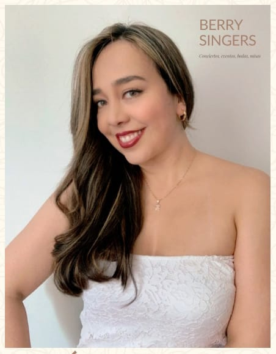

Estrella Baquero
Química y cantante lírica.Nacida en Bogotá, Colombia. Seha destacado como solista en varias
agrupaciones
y coros del país. Hoy en día interpreta como solista repertorio lírico, balada, jazz, tropical y
pop.
Así mismo, combina si pasión por la moda en una boutique: "Su Traje Elegante".
Carolina Lopez

Ortodoncista y ortopedista Maxilar, Especialista y Magister en Forense. Cantante lírica, nacida en
Bogotá, Colombia. Desde su niñez trabajó en varios coros y proyectos musicales reconocidos del país.
Ha
participado en temporadas líricas y festivales como solista. En la actualidad, fusiona su profesión
con
la música y un emprendimiento propio de alimentos gourmet: "La Carolina".
Liliana Ospina
Gestora cultural y cantante lírica. Nacida en Bogotá, Colombia. Desde temprana edad formó parte de
diversas agrupaciones musicales de la ciudad de Bogotá.
Participa como corista en diversos montajes sinfónico-corales y tiene un emprendimiento en el que
explora sus inclinaciones artísticas: "PegLove".
Adriana Ramirez

QCantante popular y lírica. Pedagoga musical nacida en Bogotá, Colombia. Ha trabajado en varios
proyectos
musicales a nivel nacional con diferentes agrupaciones. Actualmente, canta como solista en los
principales escenarios y empresas del país, interpretando repertorio popular; tambíén ejerce su
labor
pedagógica musical, como Docente Escolar.